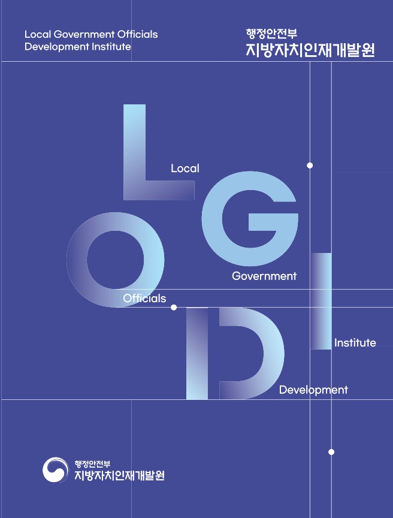
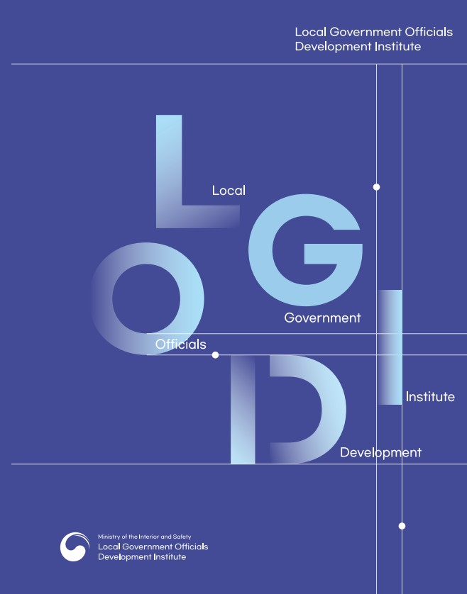

기관소개
홍보관
...
브로슈어
기관소개
홈으로 이동
1단계 메뉴 선택
2단계 메뉴 선택
현재 페이지 인쇄
브로슈어
홍보 동영상
브로슈어
자치인재원 60년사
국제교육협력 20년사
브로슈어

자치인재원 브로슈어 (국문)

자치인재원 브로슈어 (영문)
페이지 만족도 및 담당부서 안내
담당부서 안내
기획협력과
문의전화
063-907-5048
현재 페이지에 만족하십니까?
페이지 내용과 사용 편의성에 대한 의견을 들려주세요.
페이지 만족도 선택
매우만족
만족
보통
불만족
매우불만족
확인